Strings -MobileHackingLabs
October 19, 2024
Hello everyone,
In this blog, I'll guide you through a challenge I encountered, focused on finding the flag in the Strings Challenge. The challenge comes from a platform called MobileHackingLabs. Through this challenge, you'll gain a clear understanding of how intents and intent filters work on Android and get hands-on experience using Frida APIs. Let’s dive in!
For the Lab Set up, I suggest you to go through this video.
Or else you can download the APK to your machine and install it on Genymotion emulator using the adb install command.
You can find the apk at this location.
/data/app/com.mobilehackinglab.challenge-bM1TUa3XX6AYjqyurX1pqw==/
After opening the app. You will get an interface like this,
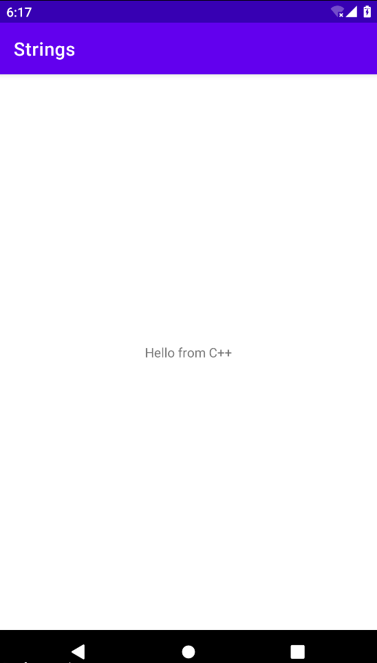
Next, we'll proceed to analyze the application's decompiled source code using JadX.
Static Analysis
AndroidManifest.xml 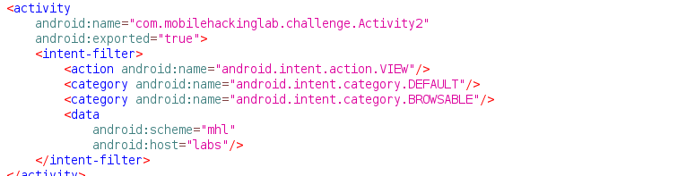 The Android activity Activity2 is accessible to external applications because the android:exported attribute is set to true The intent filter specifies that this activity can handle the android.intent.action.VIEW action and is associated with the categories android.intent.category.DEFAULT and android.intent.category.BROWSABLE. This setup enables the activity to be launched to view specific data, including access from web browsers. It is specifically designed to handle URIs with the scheme "mhl" and host "labs," such as mhl://labs/<example>.
Activity2
In Activity2 there are a few noteworthy methods. Let's begin with the onCreate() method. 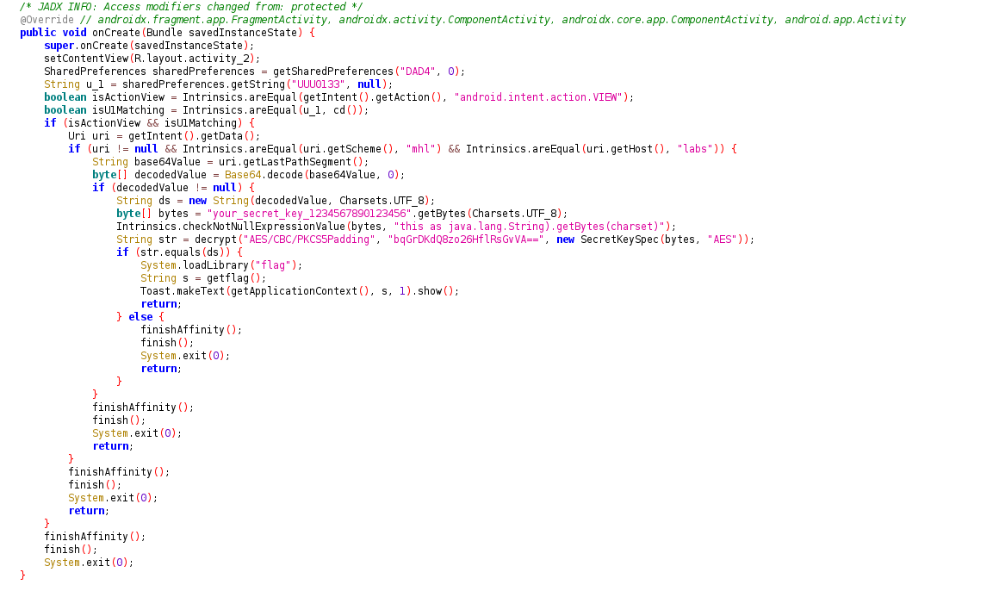 The onCreate() method retrieves a value from the shared preferences ("DAD4" with the key "UUU0133") and checks if the intent action is android.intent.action.VIEW and if the value matches the result of cd(). If these conditions are met, it processes a URI that starts with mhl://labs, extracts a base64-encoded value, decodes it, and attempts to decrypt it using AES with a predefined key. If the decrypted value matches the secret key, the app loads the "flag" library, invokes getflag(), and displays the flag using a toast message. 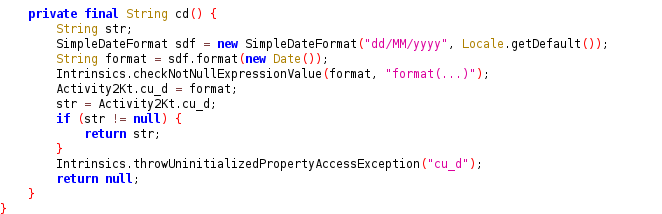 The provided code includes a private function cd() that returns a date string formatted as dd/MM/yyyy . Here’s a breakdown:
- SimpleDateFormat Initialization: A SimpleDateFormat object is created with the dd/MM/yyyy format and the default locale to format the date.
- Date Formatting: The current date is obtained using new Date(), then formatted by the SimpleDateFormat object. The result is stored in the variable format.
- Value Assignment: The formatted date string is stored in the static property Activity2Kt.cu_d for later use.
- Return Value: The function returns Activity2Kt.cu_d. If it's null, an exception is thrown, indicating that the property hasn't been initialized.
In summary, the cd() function formats the current date as dd/MM/yyyy and stores it in a static property for future reference. Within the cd() method, a class property from Activity2Kt is accessed. Let’s take a closer look at that class.
Activity2Kt 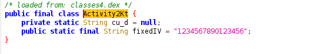 The Activity2Kt class is declared as final and contains two static fields: cu_d, a private String initialized to null, and fixedIV, a public constant String set to "1234567890123456". The cu_d field is used internally, while fixedIV serves as a fixed initialization vector for cryptographic purposes.
MainActivity
The MainActivity class has an interesting method called KLOW(). 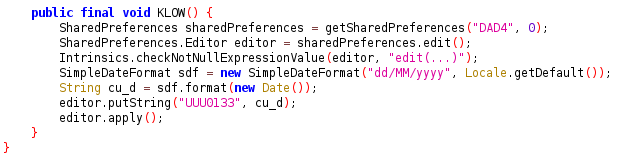 The KLOW() method stores the current date in the format dd/MM/yyyy in the app's shared preferences under the key "UUU0133". It starts by obtaining the SharedPreferences object named "DAD4" using the getSharedPreferences method. A SharedPreferences.Editor is then created to modify the shared preferences. The current date is formatted with SimpleDateFormat according to the device's default locale, and the result is assigned to the variable cu_d. This date string is saved to the shared preferences using editor.putString("UUU0133", cu_d), and the changes are finalized with editor.apply().
Exploit
Using the information obtained from the source code above, we can decrypt the ciphertext located in the onCreate() method. 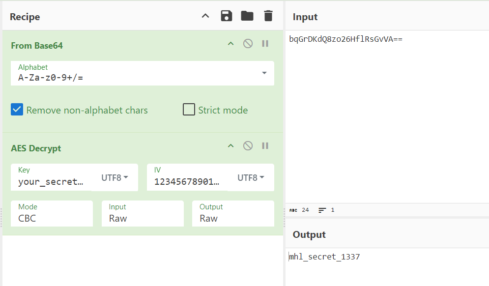 The decryption result gives us the plaintext mhl_secret_1337, which we then encode in base64 to obtain bWhsX3NlY3JldF8xMzM3.
 Next, we will utilize Frida to exploit the vulnerability by employing the following script:
Next, we will utilize Frida to exploit the vulnerability by employing the following script:
Java.perform(function() {
// Search for MainActivity after 1 second delay
setTimeout(function() {
Java.choose("com.mobilehackinglab.challenge.MainActivity", {
onMatch: function (instance) {
instance.KLOW();
},
onComplete: function () {
console.log("[*] MainActivity enumeration: Completed");
}
});
}, 1000);
// Search for Activity2 after 5 second delay
setTimeout(function() {
Java.choose("com.mobilehackinglab.challenge.Activity2", {
onMatch: function(instance) {
var cdResult = instance.cd();
console.log("[*] cd() method result: " + cdResult);
try {
var flag = instance.getflag();
console.log("[+] Instance Flag: " + flag);
} catch (e) {
console.log("[-] Unable to getflag: " + e.message);
}
},
onComplete: function() {
console.log("[*] Activity2 enumeration: Completed");
}
});
}, 10000);
});
To properly triger this activity we need to send intent with uri with “mhl” scheme and “labs” host.
└─$ adb shell am start -d "mhl://labs" -n com.mobilehackinglab.challenge/.Activity2
We can execute the script in Frida using the command:
└─$ frida -U -l script.js -f com.mobilehackinglab.challenge 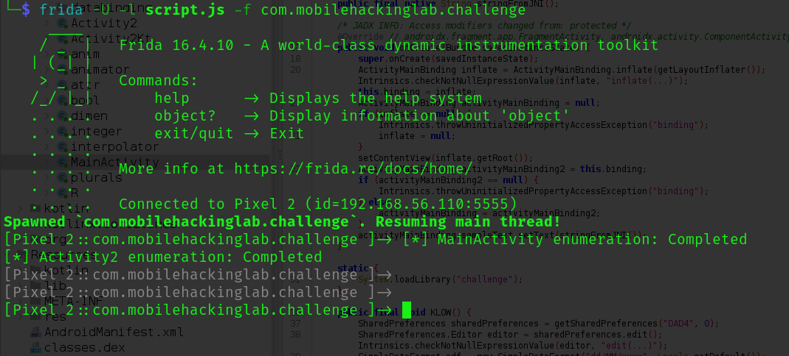 Once the script executes successfully, we retrieve the DAD4.xml file found in the directory /data/data/com.mobilehackinglab.challenge/shared_prefs. 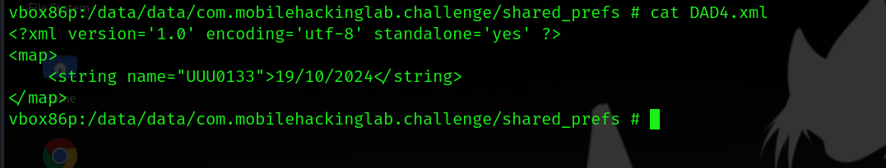 Now we can run the following adb command:
└─$ adb shell am start -W -a android.intent.action.VIEW -n com.mobilehackinglab.challenge/.Activity2 -d "mhl://labs/bWhsX3NlY3JldF8xMzM3" 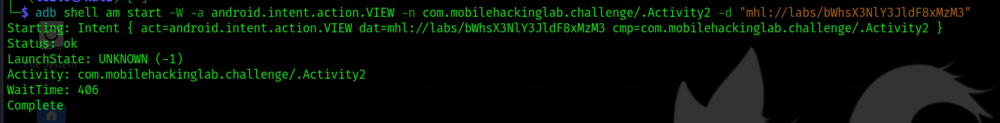 On the application's homepage, a popup shows the message "Success". This popup indicates that the operation has been successfully completed and confirms that the intended process or action has been carried out without any errors. 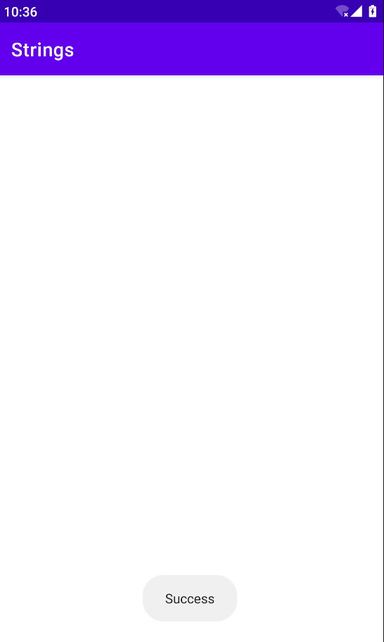 To obtain the flag we can use Fridump to look for the string "flag" within the "Strings" application (com.mobilehackinglab.challenge).
If you don’t have fridump, you can use the below command to download:
└─$ git clone https://github.com/UMESH-UDAYAN/fridump3.git 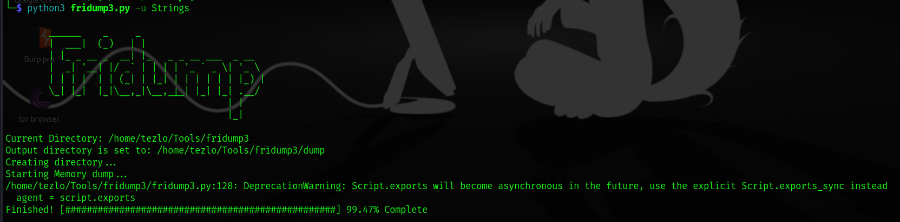 A dump folder will be created. Move to that folder and use this command to get the flag:
└─$ strings --print-file-name *| grep MHL 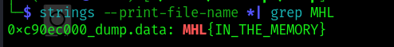 Thus we got the flag